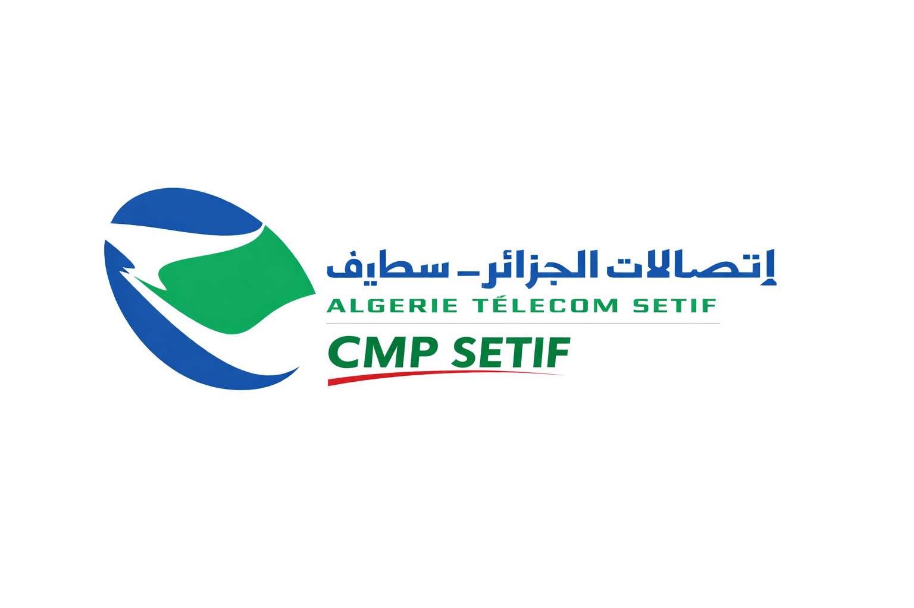

مركز معالجة الشكاوي لإتصالات الجزائر - سطيف
نحن مركز مختص في استقبال ومعالجة الشكاوي إلكترونيًا، نهدف إلى تسهيل التواصل بين إتصالات الجزائر سطيف و زبائنها الكرام بكل شفافية وسرعة.
تطبيق ذكي يسمح لي زبائننا بإرسال الشكاوي ومتابعتها مباشرة عبرة موقعننا نسعى دائما أن نكون أقرب إليكم.
📧 البريد الإلكتروني: SEYEFEDDINE.GOUADMA@algerietelecom.dz
📞 الهاتف: 036513333